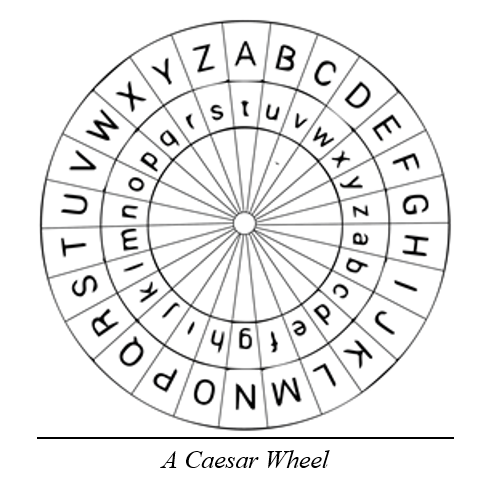

Cäsar-Verschlüsselung
Wie der Name schon sagt, wurde die Verschlüsselung von dem römischen Diktator und Feldherrn Julius Caesar verwendet. Dieser hat sie laut dem Schriftsteller Suetonius oft verwendet, meist mit dem Schlüssel 3, ihn aber nicht erfunden. [10]
Das Alphabet, wie wir es kennen, dient als Ausgangspunkt. Anschliessend wird jeder Buchstabe um die gleiche Verschiebung x verschoben, sodass sich eine Umwandlungstabelle ergibt. So wirkt die Nachricht für den Betrachter wie zufällig gewählte Buchstaben, sobald man aber die Verschiebung kennt, ist die Nachricht schnell zu entschlüsseln. [11]
| a | b | c | d | e | f | g | h | i | j | k | l | m | n | o | p | q | r | s | t | u | v | w | x | y | z |
| n | o | p | q | r | s | t | u | v | w | x | y | z | a | b | c | d | e | f | g | h | i | j | k | l | m |
Beispielsatz:
«Go home Frank» -> «Tb ubzr Senax»
-> Nur 25 mögliche Schlüssel

Kurzes Experiment
Anstatt eines Experimentes auf Papier, haben wir uns dafür entschieden, den sehr einfachen Algorithmus einfach in Python umzusetzen.
Der Code hierfür ist dokumentiert und im Anhang abgelegt.
Nutzen wir nun dieses Programm um den Text «Hello there» mit dem Schlüssel 3 zu verschlüsseln, resultiert dies in «Khoor wkhuh».
Ausschnitt aus dem Code:
# get the index and turn the letter into uppercase
# since operations are case-sensitive and LETTERS only
# contains uppercase letters
letter_index = LETTERS.index(character.upper())
# calculate new index
letter_index_shifted = letter_index + shift
# now it might be out of range so we need to wrap around
# ->[A, B, ..., Y, Z] -> Index 20 = U
# Index of 20 + Shift of 10 = 30, but list indexes only
# go up to 25 (first element has an index of 0). To do
# this we use the modulo operator which is essentially
# "divide by and return the remainder"
letter_index_shifted = letter_index_shifted % len(LETTERS)
# now we need to get the letter from the shifted index
# and add it to the ciphertext string
ciphertext_letter = LETTERS[letter_index_shifted]Um diesen ciphertext, hier in unserem Fall «Khoor wkhuh», nun zu entschlüsseln, müssen wir entweder den Schlüssel kennen, oder alle möglichen Schlüssel ausprobieren. Um dies zu tun, haben wir ein weiteres Programm geschrieben und ebenfalls im Anhang dokumentiert.
Output for ciphertext = "Khoor wkhuh" and no key
Key 1: Jgnnq vjgtg
Key 2: Ifmmp uifsf
Key 3: Hello there
Key 4: Gdkkn sgdqd
Key 5: Fcjjm rfcpc
Key 6: Ebiil qebob
Key 7: Dahhk pdana
Key 8: Czggj oczmz
Key 9: Byffi nbyly
Key 10: Axeeh maxkx
Key 11: Zwddg lzwjw
Key 12: Yvccf kyviv
Key 13: Xubbe jxuhu
Key 14: Wtaad iwtgt
Key 15: Vszzc hvsfs
Key 16: Uryyb gurer
Key 17: Tqxxa ftqdq
Key 18: Spwwz espcp
Key 19: Rovvy drobo
Key 20: Qnuux cqnan
Key 21: Pmttw bpmzm
Key 22: Olssv aolyl
Key 23: Nkrru znkxk
Key 24: Mjqqt ymjwj
Key 25: Lipps xlivi
All keys bruteforced in 94.300 µsAlle Schlüssel wurden innerhalb von 94 Mikrosekunden gelöst, was zeigt, weshalb diese Verschlüsselung extrem unsicher ist.
Gruppe
Nun haben wir einer Experimentgruppe, hier den Eltern von Vincent, einen verschlüsselten Text gegeben und angewiesen, diesen zu entschlüsseln. Die Experimentgruppe hat keinerlei Erfahrung in Kryptographie. Nachdem Vincent erklärt hat, wie die Cäsar-Verschlüsselung funktioniert, haben sie sofort den Ansatz erkannt, einfach alle Schlüssel auszuprobieren. Der erste Gedanke war, nach einem Entschlüsselungstool [13] zu suchen, aber nachdem wir sie baten, es für dieses Experiment von Hand zu versuchen, wurde dieser nicht umgesetzt. Eine Drehscheibe haben sie nicht gebastelt, aber das ganze Alphabet aufgeschrieben und die Buchstaben so verschoben. Für die Schlüsselsuche haben sie bei 1 begonnen und sich von dort aus hochgearbeitet. Hierbei haben sie nicht den ganzen Text, sondern nur das erste Wort mit einem Schlüssel entschlüsselt und ihn teilweise sogar bereits nach einigen Buchstaben verworfen. Durch diese Herangehensweise kamen sie rasch zur Lösung, nach etwa 4:30 Minuten hatten sie den verschlüsselten Text «Cvggjjjj!» entschlüsselt. Mit dem Schlüssel 21 ergibt sich die Lösung «Halloooo!».
Analyse
Die Herangehensweise der Experimentgruppe wies einige unerwartete, aber intuitive Optimierungen auf. Nachdem der Algorithmus erklärt wurde, ging es mit der Entschlüsselung rasch voran. Eine weitere mögliche Optimierung wäre gewesen, die Schlüssel aufzuteilen, jemand sucht von 25 abwärts und jemand von 1 aufwärts, aber diese wurde nicht angewendet.
Das Experiment zeigt, dass sobald der Mechanismus der Verschlüsselung klar ist, die Entschlüsselung trivial ist. Dabei gibt es jedoch einige zu beachtende Faktoren: Berechnungsaufwand, Werkzeuge und (mögliche) Schlüssel.
Der Berechnungsaufwand ist wichtig, da falls die Berechnung mehr Zeit in Anspruch genommen hätte, die Entschlüsselung länger gedauert hätte. Ob diese nun 5 oder 10 Minuten dauert, spielt hier keine grosse Rolle, aber bei moderner Kryptographie, bei welcher die Entschlüsselung mehrere tausend oder sogar Millionen Jahre dauern könnte, wird die Information irrelevant werden, bevor sie entschlüsselt wird.
Die zur Verfügung stehenden Werkzeuge sind relevant, da diese die Arbeit massiv beschleunigen können. Hätte unsere Experimentgruppe über das Programm verfügt, welches wir geschrieben haben, hätte die Entschlüsselung nur diese 94 Mikrosekunden in Anspruch genommen. Auch später wurde ein Werkzeug, die Bombe-Maschine, gebaut, um die Verschlüsselung der Enigma zu knacken.
Die möglichen Schlüssel, auch keyspace genannt, sind relevant, da diese bestimmen, wie schnell ein Angreifer alle möglichen Kombinationen ausprobieren kann. Die Cäsar-Verschlüsselung bietet nur 25 mögliche Schlüssel, eine triviale Zahl für moderne Computer. Enigma hingegen bot 3·10114 mögliche Schlüssel. (Durch menschliche Fehler aber eher 1.58·1019) [14]. Moderne Verschlüsselungen wie RSA hingegen bieten Keyspaces bis zu 24070.5. [15] Keyspace entspricht nicht direkt der Sicherheit, Sicherheit erfordert einen sicheren Algorithmus, ist allerdings dennoch ein grosser Bestandteil davon.
Ein weiteres interessantes Experiment wäre es zu sehen, wie lange eine Testgruppe benötigt, um einen Cäsar-verschlüsselten Text zu entschlüsseln, wenn diese den Algorithmus nicht kennt.